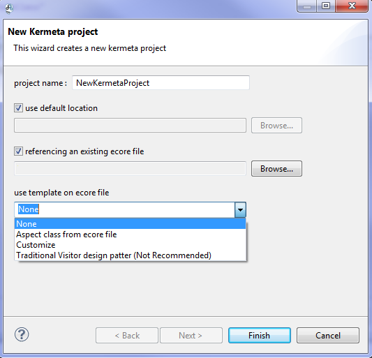
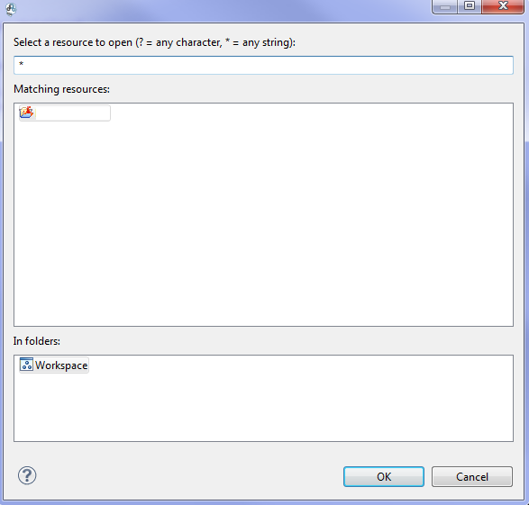

How to parameter a K2 project ?
It exists 2 features :
- Create a new DSA project
- Select an existing DSA project
How to create a new DSA Project ?
- Open the file "project.gemoc_language_conf"
It shall refresh to point on the good gemoc language project
- Right click on this file, select Gemoc Language
- A wizard is opened itself, check create New DSA and click on button "Next"
- This wizard is opened now

- Fill the blanks
- For more information on this wizard using
more information
How to select an existing DSA Project ?
- Open the file "project.gemoc_language_conf"
It shall refresh to point on the good gemoc language project
- Right click on this file, select Gemoc Language
- A wizard is opened itself, check select existing DSA and click on button "Next"
- This wizard is opened now

- Choose the project among those proposed
- Click on "OK" button to finish